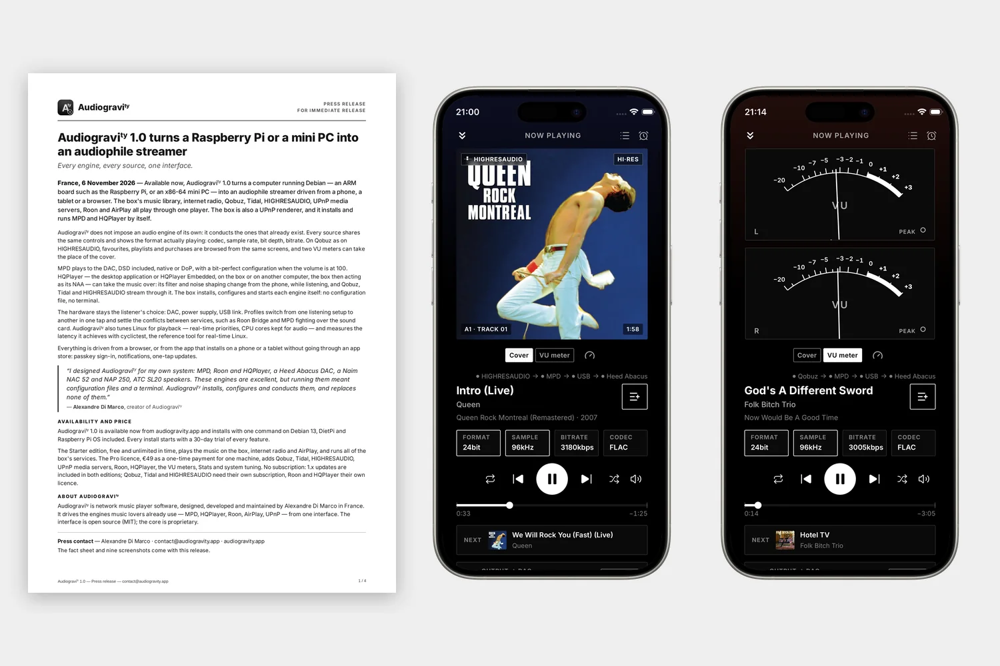
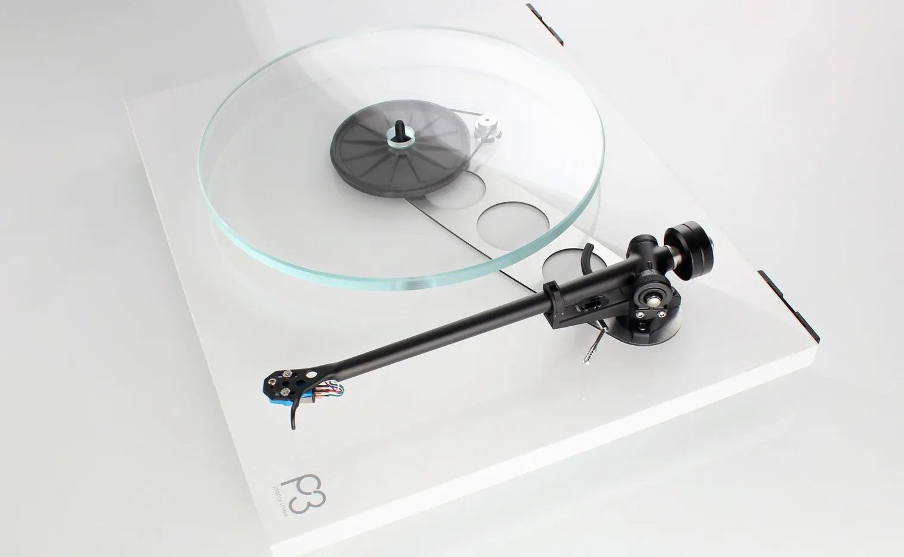
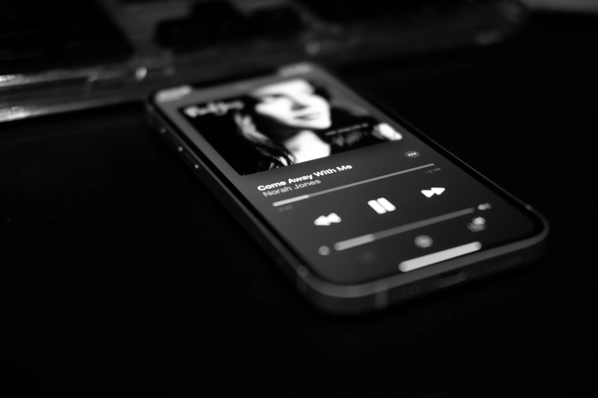
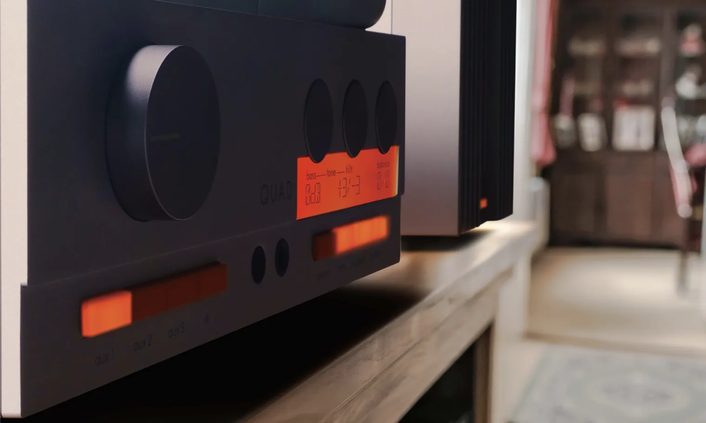

Blog
Stories about hi-fi equipment, what it takes to use it with a streamer today, and news of Audiogravity, checked and dated like the guides.

Audiogravity 1.0: the press release
The press release for Audiogravity 1.0, in English and French, with its fact sheet and nine screenshots for anyone writing about it.

The Rega Planar 3: the affordable turntable that set the standard
Rega's deck as the specialist press heard it, from 1984 to 2024: its rhythm, its tone, its limits, its generations, and how it plays on a NAIT 2.

HIGHRESAUDIO, Qobuz and Tidal: who runs them, what artists get, what you hear
Three hi-res streaming services compared: owners and countries, catalogue, formats, prices, pay per stream, AI music, and Audiogravity.

The Quad 33 and 303: Peter Walker's transistor classic, and its return
Quad's 1967 pre/power pair: what made it a classic, how the originals sound, what reviewers heard from the 2024 pair, and using one today.

The BBC LS3/5A: the little monitor that became a legend
The BBC's small monitor as critics heard it from 1977 to 2021: its midrange, its bass trick, its limits, its versions, and the amps that suit it.

The Heed Abacus: a Hungarian DAC, and the DSD it plays only at full volume
Heed's DAC of 2017: what it takes, what Linux sees of it, and why its DSD stops when its USB volume drops below 0 dB.

How old is your Naim? Serial numbers and years, 1982 to 2022
The year each Naim serial number was made, from Naim's own table to 2022: its overlaps explained, and how to date anything newer.

The Naim NAIT 2: the small amplifier that became a reference
Naim's 1988 integrated as the specialist press heard it, from 1989 to 2018: its timing, its tone, its limits, its rivals, what to pair it with.